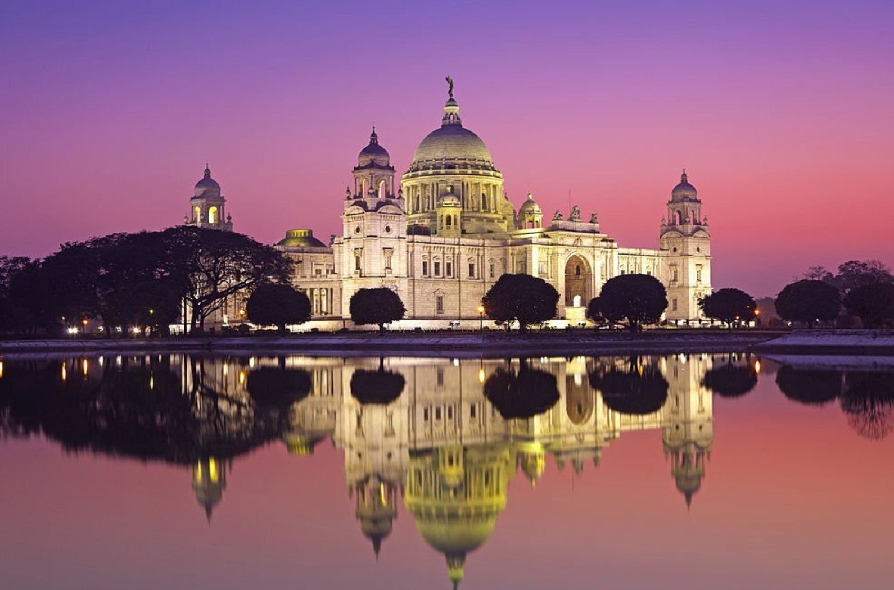
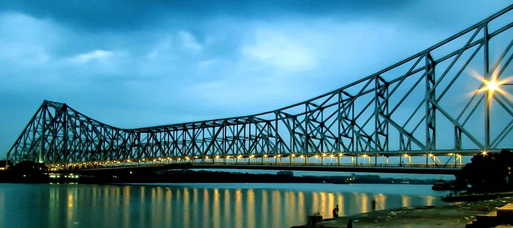
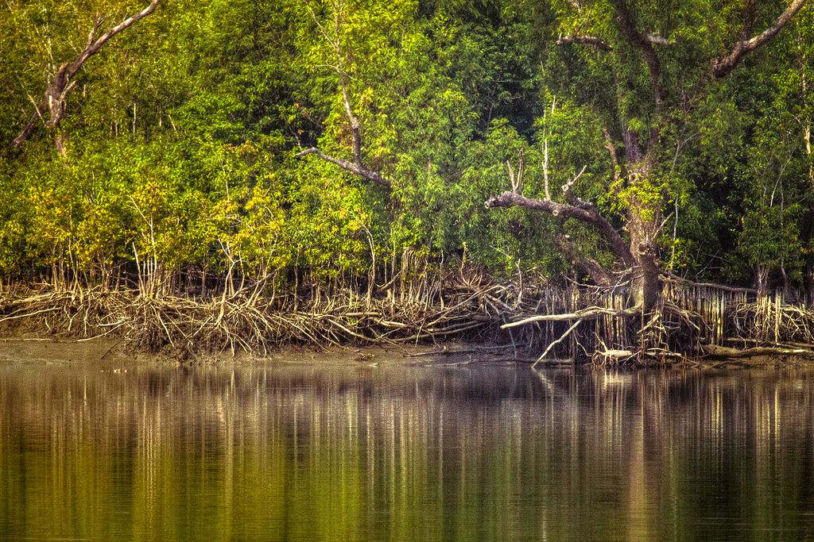
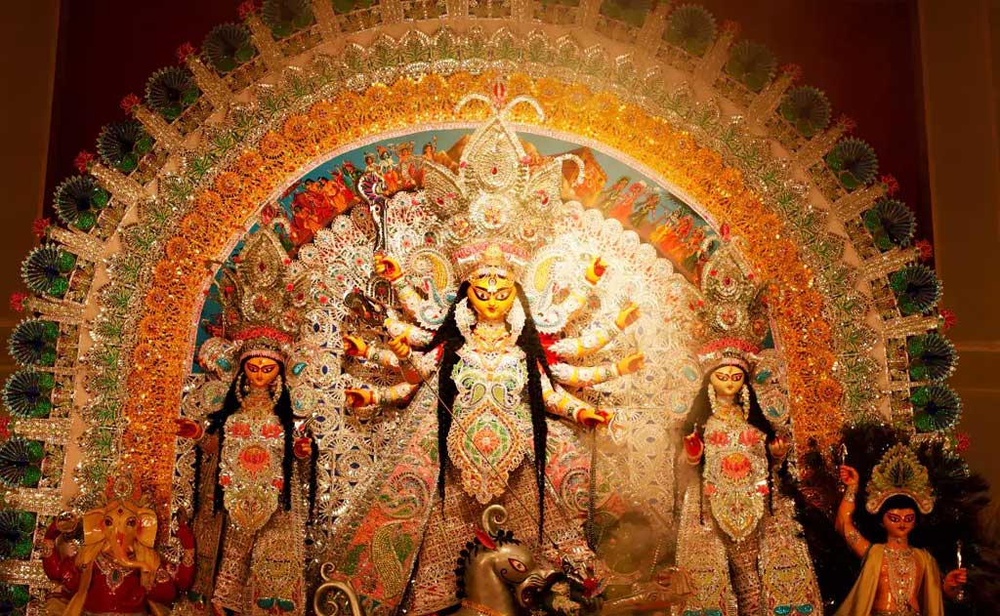

The Land of Culture, Festivals & Heritage

The Victoria Memorial in Kolkata is a grand marble monument built during the British era, now serving as a museum and cultural hub.
It is surrounded by beautiful gardens and reflects the architectural heritage of colonial India in West Bengal.

Howrah Bridge is an iconic cantilever bridge over the Hooghly River in Kolkata. Connecting the city and Howrah, it is a symbol of West Bengal’s urban culture and bustling trade.
The bridge attracts photographers, tourists, and daily commuters alike.

The Sundarbans mangrove forest is a UNESCO World Heritage Site, home to the Royal Bengal Tiger and rich biodiversity.
Visitors can enjoy nature tours, wildlife sightings, and explore the unique ecosystem of West Bengal’s coastal region.

Durga Puja is the grandest festival of West Bengal, celebrated with elaborate pandals, artistic idols, music, dance, and cultural programs.
The festival marks the victory of Goddess Durga over evil, bringing communities together in devotion and celebration.
West Bengal is known for its literature, classical music, dance forms like Chhau, traditional arts like terracotta and clay idols, and vibrant festivals.
From Bengali cuisine like Rosogolla and Mishti Doi to folk arts and temple architecture, West Bengal’s culture reflects richness, creativity, and spiritual depth.